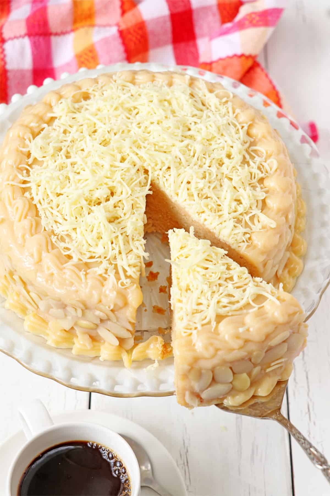
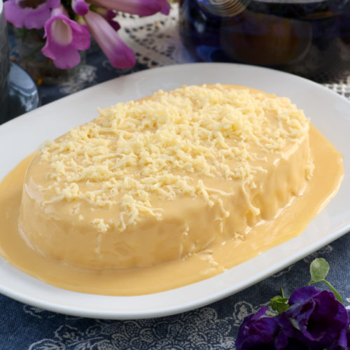
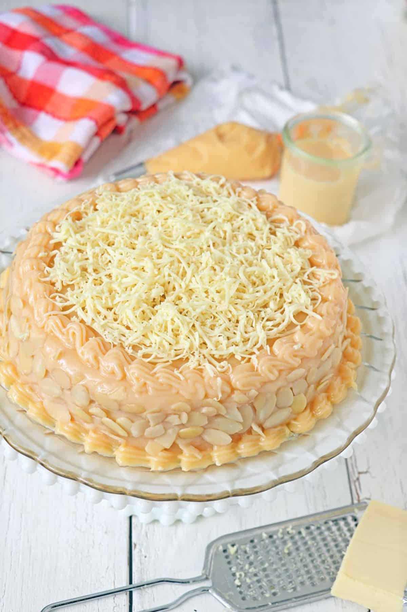
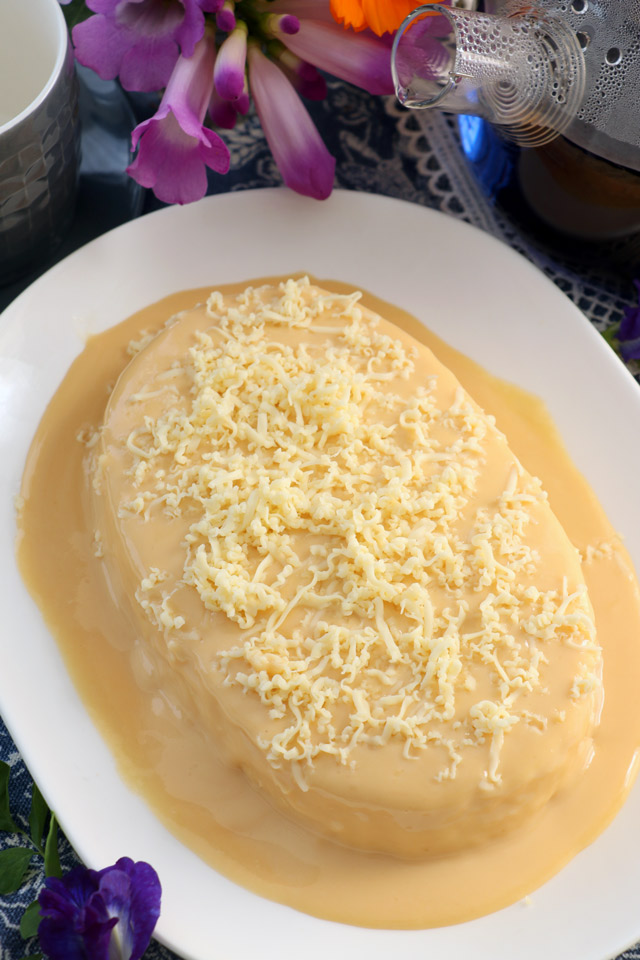
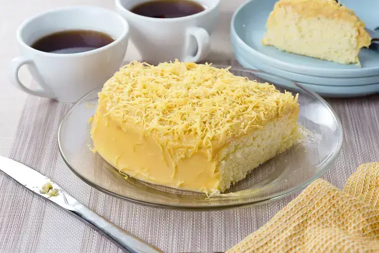

Yema Cake





History
Ang Yema Cake ay isang Filipino creation na inspired sa Spanish custard candy na “yema.” Binubuo ito ng soft chiffon or sponge cake layers na may creamy yema custard sa ibabaw at pagitan. Naging popular ito sa panaderya at mga birthday celebrations dahil sa tamis at creamy texture. Ang Yema Cake ay simbolo ng Filipino knack sa pag-adapt ng foreign desserts at pagdagdag ng sariling touch gamit ang local ingredients.
Ingredients & Notes
Cake flour
Eggs
Sugar
Butter
Condensed milk
Evaporated milk
Egg yolks
Vanilla extract
Price
₱20